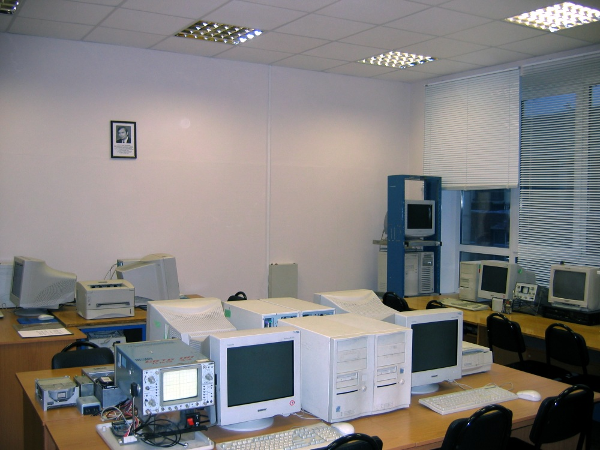

История развития технологии

Введение
Масштаб внедрения информационных технологий (ИТ) в производственные процессы российских предприятий и организаций достиг глобального уровня. Расходы только одного крупного предприятия на внедрение и сопровождение ИТ оцениваются миллионами долларов в год. Как избежать излишних затрат на внедрение систем для автоматизации производственных процессов различных этапов жизненного цикла изделия?
Для компетентных специалистов не является новостью, что развиваемые на предприятиях и организациях системы ИТ сегодня нередко вступают в противоречие друг с другом. При этом возникает необходимость использовать для разных целей один источник информации. Примером является система автоматизации складской деятельности в рамках ERP и система автоматизации подготовки материальных спецификаций на конструкцию изделия в рамках CAD/ CAM/CAE/PLM. Когда задачей была автоматизация отдельно взятых направлений (склад, проектирование и т. д.), все было относительно просто. После того как встала проблема интеграции производственных процессов разработки, подготовки производства и производства, мы оказались в ситуации, когда «на руках» две системы, во внедрение которых сделана масса инвестиций. Возникла необходимость перехода либо на платформу одной из систем, либо разработки транслятора данных, что само по себе является сложнейшей задачей. А ведь вначале у системы не было возможности реализации функций, для которых и была выбрана вторая система, и обвинять в отсутствии единой политики ИТ несправедливо.
Развитие технологии
Последнее десятилетие XX и начало XXI века характеризуются широкой компьютеризацией всех видов деятельности человечества: от традиционных интеллектуальных задач научного характера до автоматизации производственной, торговой, коммерческой, банковской и других видов деятельности.
Этой всеобщей тенденции способствовали такие факторы, как появление и массовое применение персональных компьютеров, а также средств телекоммуникаций и вычислительных сетей, в т. ч. «всемирной паутины» - интернета. Эти факторы сделали актуальной проблему развития и эффект ивного использования информационных ресурсов: локальных, общенациональных и даже глобальных.
Уже в 80-е гг. было осознано, что информационные ресурсы любой страны по стоимости соизмеримы и, быть может, превосходят стоимость природных, в т. ч. энергетических ресурсов. Стало ясно, что устоять в конкурентной борьбе смогут только те предприятия, которые будут применять в своей деятельности современные информационные технологии (ИТ). Именно ИТ, наряду с прогрессивными технологиями материального производства, позволяют существенно повысить производительность труда и качество выпускаемой продукции одновременно со значительным сокращением сроков постановки на производство и выпуска новых, более совершенных изделий, отвечающих запросам и ожиданиям потребителей.
Однако в тот же период было осознано, что частичная, фрагментарная компьютеризация отдельных видов производственной деятельности, будучи делом дорогостоящим, не оправдывает возлагаемых на нее надежд. Это связано с тем, что первые реализации ИТ представляли собой попытки внедрения качественно новых средств в традиционную технологическую среду. Эти попытки либо полностью отторгались, либо адаптировались к этой среде таким образом, что эффект от их использования был невелик. Примерами таких попыток могут служить:
• многочисленные АСУ, роль которых сводилась к автоматизации простейших учетных и отчетных функций;
• конструкторские САПР (Computer Aided Design, CAD), заменявшие чертежную доску и кульман экраном дисплея;
• технологические САПР (Computer Aided Manufacturing, CAM), облегчавшие подготовку технологической документации и управляющих программ для станков с ЧПУ;
• автоматизированные системы инженерных расчетов (Computer Aided Engineering, CAE).
Все эти средства создавались на различных вычислительных платформах, в различных языковых средах и, как правило, были несовместимы между собой, что предопределяло их автономное использование с необходимостью многократной перекодировки подчас одной и той же информации для ввода ее в ту или иную систему. Помимо резкого возрастания объемов рутинного труда, это приводило к многочисленным ошибкам и, как следствие, к снижению эффективности систем.
Вместе с тем, опыт, накапливавшийся в процессе создания и разработки автономных систем, оказался полезным: он позволил осознать необходимость интеграции систем, реализующих различные ИТ, в единый комплекс, который в отечественной технической литературе получил название ИАСУ - интегрированная автоматизированная система управления, а в англоязычной литературе - CIM (Computer Integrated Manufacturing).
Первоначально появление и внедрение ИАСУ (CIM) однозначно связывалось с высокоавтоматизированными производственными комплексами типа гибких автоматизированных производств и даже полностью автоматизированных предприятий. Однако дальнейшее развитие показало целесообразность внедрения ИАСУ на предприятиях с умеренным уровнем автоматизации технологических процессов.
Существенным оказалось создание в рамках предприятия единого информационного пространства (ЕИП), или интегрированной информационной среды (ИИС), охватывающего все этапы жизненного цикла (ЖЦ) выпускаемой этим предприятием продукции.
Именно идея ИИС и информационной интеграции стадий ЖЦ стала базовой при выработке подхода, получившего в США название CALS (Continuous Acquisition and Life cycle Support - непрерывная информационная поддержка поставок и жизненного цикла). Русскоязычное название этой концепции и стратегии - ИПИ, или информационная поддержка жизненного цикла изделий.